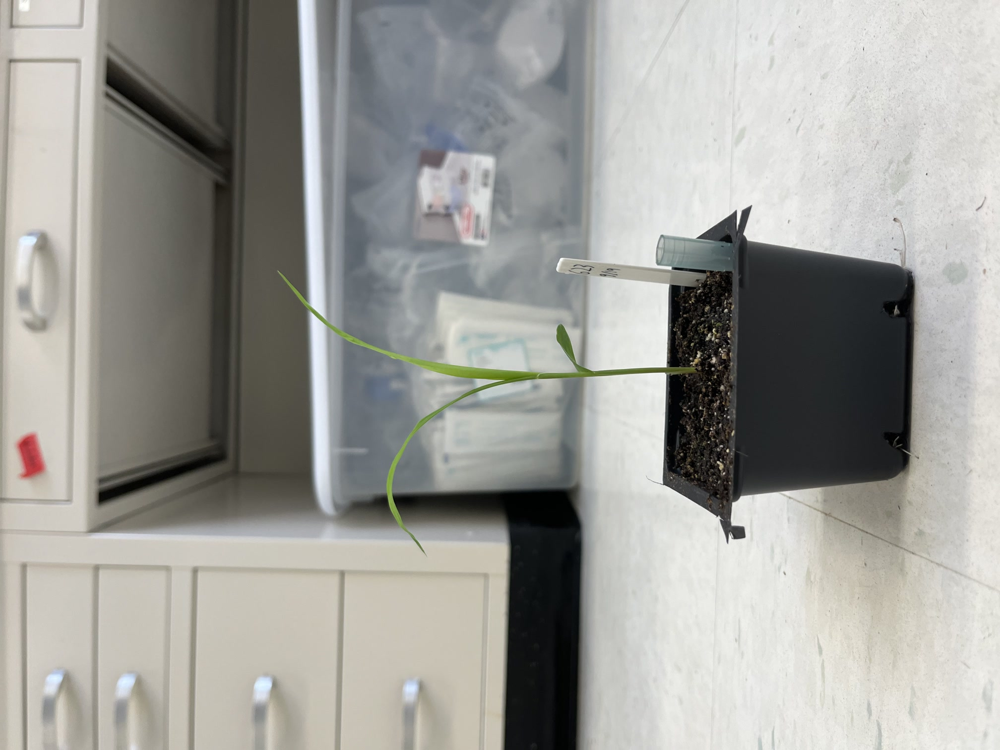
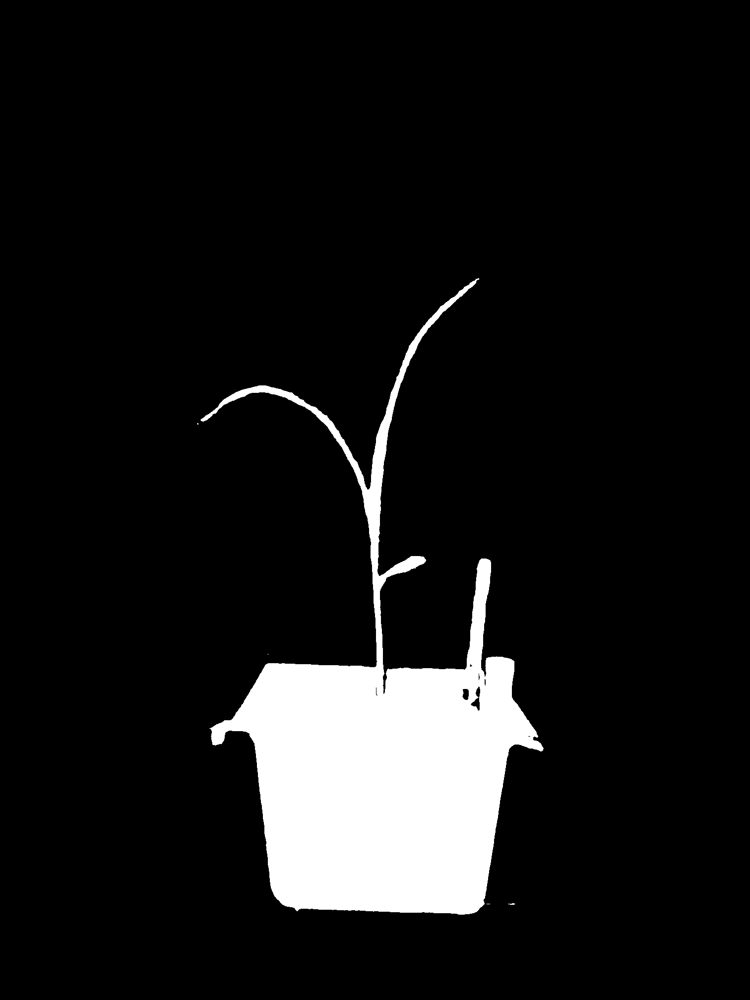

Masking¶
To separate the plant object from the background scene, we utilize segmentation to automatatically detect the plant and create a corresponding binary mask for each image.
Installing Language Segment-Anything¶
Language Segment-Anything is an open-source package used for object detection and image segmentation. The model utilizes Meta’s Segment Anything Model 2 for instance segmentation and Grounding DINO’s open-set detection model.
To install the Language Segment-Anything model, create a new Conda environment.
conda create --name lang_sam python=3.10
conda activate lang_sam
Install the dependencies, and then the Language Segment-Anything package.
pip install torch==2.4.1 torchvision==0.19.1 --extra-index-url https://download.pytorch.org/whl/cu124
pip install -U git+https://github.com/luca-medeiros/lang-segment-anything.git
Masking the Images¶
Change directory into the plant folder, and run the create_mask.py script.
cd /home/<user>/nerfstudio/data/plant
python /home/<user>/nerfstudio/nerfstudio/scripts/datasets/create_mask.py
Masks have been generated for each image, as well as downscaled versions. These masks can be found in the masks, masks_2, masks_4, and masks_8 folders.
After running the masking script, the folder structure should now look as such:
📂.../
├──📂nerfstudio/
│ ├──📂data/
│ │ ├──📂plant/
│ │ │ ├──📂source/
│ │ │ │ ├── 🖼️ <raw image 0>
│ │ │ │ ├── 🖼️ <raw image 1>
│ │ │ │ │...
│ │ │ ├──📂colmap/
│ │ │ ├──📂images/
│ │ │ ├──📂images_2/
│ │ │ ├──📂images_4/
│ │ │ ├──📂images_8/
│ │ │ ├──📂masks/
│ │ │ │ ├── 🖼️ <binary mask 0>
│ │ │ │ ├── 🖼️ <binary mask 1>
│ │ │ │ │...
│ │ │ ├──📂masks_2/
│ │ │ ├──📂masks_4/
│ │ │ ├──📂masks_8/
│ │ │ ├──📄 sparse_pc.ply
│ │ │ ├──📄 transforms.json
│ │ │...
│ │...
│...
Here is an example of a raw image of the plant, and its corresponding binary mask:
Image before segmentation:

Image after segmentation:

A foreground pixel receives a value of 1 (white), and a background pixel receives a value of 0 (black).